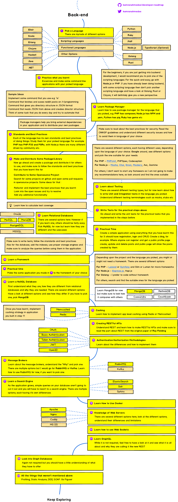
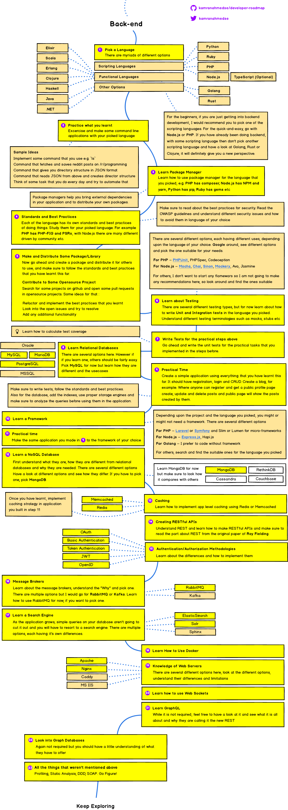

バックエンド体験入門コース
***
Agenda
- トレーニング概要
- TRUNKとは
- 自己紹介
- 業界紹介
- 各スキル領域と役割
- バックエンドエンジニアの１日の仕事の流れ
- プログラミング基礎
- プログラミング体験
- お知らせ
トレーニング概要
バックエンドの仕事内容を知ろう
プログラミングの基礎を学ぼう

プログラミングを体験しよう

TRUNKとは
自己紹介
WHAT I'M ABOUT
株式会社TRUNK TL Kawasaki Atsushi
2013年じげんグループHRメディア事業のPMやバックエンドを担当。
新規事業立ち上げの経験を経てエンジニアリングユニットのマネージャーに従事。
2015年に株式会社カヤックへ入社。
クライアントワークや自社サービス(Lobi)のフロントエンド、バックエンドおよびインフラ設計、構築、運用を担当。
業界紹介
Tech Companies

Tech Conference

Web制作フロー

各スキル領域と役割
例
スキル領域
- アプリケーション層 (HTTP DHCP SMTP)
- プログラミング言語 (コンパイラ型/インタプリタ型)
- データベース設計
- Webセキュリティ
 参考https://github.com/kamranahmedse/developer-roadmap
参考https://github.com/kamranahmedse/developer-roadmap
バックエンドエンジニアの１日の仕事の流れ
プログラミング基礎
Ruby基本
FizzBuzz問題をやってみよう!
- 1から100までの数を順番に出力
- 3で割り切れる数ならFizz
- 5で割り切れる数ならBuzzと出力
- 両方で割り切れるならFizzBuzzと出力

Try
https://repl.it/@pocke777/FizzBuzz-TemplateRails概論
Ruby on Railsとは?
Ruby on Rails（ルビーオンレイルズ）は、オープンソースのWebアプリケーションフレームワークである。RoRまたは単にRailsと呼ばれる。その名にも示されているようにRubyで書かれている。 またModel View Controller（MVC）アーキテクチャに基づいて構築されている。
wiki:https://ja.wikipedia.org/wiki/Ruby_on_RailsModel, View, Controllerについて
Model (モデル)
一般的にはビジネスロジックといわれているが、実態はだいたいの場合データベース処理を担う。
View (ビュー)
表示内容生成部分。いわゆる HTML 部分と思っておけば良い。
Controller (コントローラ)
ユーザからのリクエストを処理するもの。処理といっても複雑な処理はここではしない。 複雑な処理は Model に委譲し、その結果を表示する HTML (等)を生成するために View を用いる。

ルート設定
 https://aspnet-mvc.clock-up.jp/contents/quick/hello-mvc
https://aspnet-mvc.clock-up.jp/contents/quick/hello-mvc